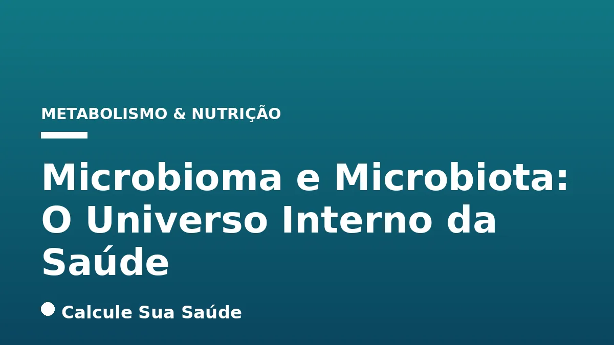

Aviso médico importante
Este conteúdo é educativo e informativo e não substitui a consulta, o diagnóstico ou o tratamento de um profissional de saúde. Em caso de sintomas, procure orientação médica.
Índice do Artigo
- 1. O Universo Microscópico em Nós: Microbioma e Microbiota
- 2. A Diversidade Microbiana no Corpo Humano
- 3. Funções Essenciais da Microbiota para a Saúde Humana
- 4. Disbiose Intestinal: O Desequilíbrio Silencioso
- 5. Causas e Fatores de Risco para a Disbiose
- 6. Sintomas da Disbiose Intestinal: Um Quadro Complexo
- 7. Diagnóstico da Disbiose: Uma Abordagem Multidisciplinar
- 8. Estratégias de Prevenção: Cultivando um Microbioma Saudável
- 9. Abordagens Terapêuticas para a Disbiose: O Que a Ciência Recomenda
- 10. Desmistificando o Microbioma: Verdades e Mitos
- 11. O Microbioma no Contexto Brasileiro: Desafios e Perspectivas
- 12. Considerações Finais: A Importância da Saúde Intestinal Integral
- 13. Perguntas frequentes
O corpo humano é um ecossistema complexo, habitado por trilhões de microrganismos que, em conjunto, formam o que conhecemos como microbioma e microbiota. Longe de serem meros passageiros, essas comunidades microbianas desempenham papéis fundamentais na manutenção da nossa saúde, influenciando desde a digestão e a absorção de nutrientes até o desenvolvimento do sistema imunológico e a proteção contra patógenos.
A compreensão desses termos é o primeiro passo para desvendar sua importância. Enquanto a microbiota se refere ao conjunto de microrganismos vivos – como bactérias, fungos, vírus e protozoários – que colonizam diversas partes do nosso corpo, o microbioma abrange não apenas esses microrganismos, mas também seus genomas e o ambiente em que vivem. Essa distinção, embora sutil, ressalta a complexidade e a interconexão entre os habitantes microscópicos e seu hospedeiro.
Neste artigo aprofundado, exploraremos a fundo o universo do microbioma e da microbiota humana, suas funções vitais, as causas e consequências do desequilíbrio conhecido como disbiose, as estratégias de diagnóstico, prevenção e tratamento baseadas em evidências científicas, e desmistificaremos conceitos comuns para oferecer uma visão clara e precisa sobre este campo em constante evolução da saúde.
Em resumo
- O microbioma e a microbiota são comunidades de microrganismos (bactérias, fungos, vírus) e seus genes que habitam o corpo humano, essenciais para a saúde.
- A microbiota desempenha funções cruciais na digestão, síntese de vitaminas, proteção contra patógenos e desenvolvimento imunológico.
- Disbiose é o desequilíbrio da microbiota, causado por dieta inadequada, uso de medicamentos, estresse, infecções e estilo de vida, manifestando-se com sintomas gastrointestinais e sistêmicos.
- O diagnóstico da disbiose é clínico e multifatorial, não dependendo de um único exame, e deve ser conduzido por um especialista como o gastroenterologista.
- A prevenção e o tratamento da disbiose focam em dieta balanceada, uso consciente de antibióticos, gerenciamento do estresse, atividade física, probióticos, prebióticos e, em casos específicos, Transplante de Microbiota Fecal (TMF).
- Muitos mitos sobre o microbioma persistem; a ciência atualiza constantemente nosso entendimento sobre sua composição, peso e influência na saúde.
1. O Universo Microscópico em Nós: Microbioma e Microbiota
A vida na Terra é intrinsecamente ligada à existência de microrganismos, e o corpo humano não é exceção. Somos, na verdade, um superorganismo, uma complexa rede de células humanas e microbianas que coexistem em uma relação simbiótica. Para compreender essa intrincada parceria, é fundamental distinguir dois conceitos-chave: microbioma e microbiota.
A microbiota refere-se à coleção de todos os microrganismos vivos que colonizam o corpo humano. Isso inclui uma vasta gama de bactérias, vírus, fungos, leveduras e protozoários que habitam diferentes nichos, como o intestino, a pele, a boca, as vias aéreas e o trato urogenital. A microbiota é dinâmica, variando em composição e função ao longo da vida de um indivíduo e entre diferentes indivíduos.
Já o microbioma é um conceito mais abrangente. Ele engloba não apenas os microrganismos da microbiota, mas também seus genomas (o conjunto completo de seu material genético), seus metabólitos (substâncias produzidas por eles) e as condições ambientais do seu habitat. Em essência, o microbioma é o ecossistema completo formado pelos microrganismos e tudo o que está associado a eles dentro e sobre o corpo humano. Embora os termos sejam frequentemente usados de forma intercambiável na linguagem popular, a distinção científica é importante para a pesquisa e o entendimento aprofundado.
2. A Diversidade Microbiana no Corpo Humano
A distribuição da microbiota não é uniforme em todo o corpo; cada região possui uma comunidade microbiana única, adaptada às condições específicas do ambiente. Essa diversidade é crucial para as funções que esses microrganismos desempenham.
Microbiota Intestinal: O Centro da Atenção
A microbiota intestinal é, sem dúvida, a mais estudada e a mais diversificada. O intestino grosso abriga trilhões de microrganismos, predominantemente bactérias, que formam uma comunidade incrivelmente densa e complexa. Essa comunidade é vital para a digestão de componentes alimentares que as enzimas humanas não conseguem quebrar, como fibras e certos amidos, e para a produção de compostos benéficos.
Outros Ecossistemas Microbianos
- Microbiota da Pele: A pele é o maior órgão do corpo e serve como uma barreira protetora. Sua microbiota ajuda a defender contra patógenos e a modular o sistema imunológico local.
- Microbiota Oral: A boca é um dos ambientes mais diversos, com centenas de espécies bacterianas. O equilíbrio aqui é fundamental para a saúde bucal e pode influenciar a saúde sistêmica.
- Microbiota Respiratória: As vias aéreas superiores e inferiores também possuem suas próprias comunidades microbianas, que desempenham um papel na defesa contra infecções respiratórias.
- Microbiota Urogenital: Particularmente no trato genital feminino, a microbiota (dominada por Lactobacillus) é crucial para manter um ambiente ácido que inibe o crescimento de patógenos.
A interação entre essas diferentes comunidades e o hospedeiro humano é um campo de pesquisa em constante expansão, revelando a profundidade da influência microbiana em nossa saúde.
3. Funções Essenciais da Microbiota para a Saúde Humana
A relação entre o ser humano e sua microbiota é de mutualismo, onde ambos se beneficiam. As funções desempenhadas por esses microrganismos são tão vastas quanto vitais, impactando diretamente nossa fisiologia e bem-estar.
Proteção Contra Patógenos
Uma microbiota equilibrada atua como uma linha de defesa natural. As bactérias benéficas competem com microrganismos patogênicos por nutrientes e locais de adesão na mucosa, além de produzirem substâncias antimicrobianas que inibem o crescimento de invasores indesejados. Essa "resistência à colonização" é um mecanismo crucial para prevenir infecções.
Desenvolvimento e Modulação do Sistema Imunológico
A microbiota desempenha um papel fundamental no amadurecimento e na regulação do sistema imunológico, especialmente no intestino. Ela "educa" as células imunes, ajudando-as a distinguir entre patógenos e substâncias inofensivas, e a desenvolver uma resposta imune adequada. Desequilíbrios podem levar a respostas imunes exageradas ou insuficientes.
Auxílio na Digestão e Absorção de Nutrientes
Muitos componentes da nossa dieta, como fibras e certos carboidratos complexos, não podem ser digeridos pelas enzimas humanas. A microbiota intestinal possui as enzimas necessárias para fermentar essas substâncias, produzindo compostos que podem ser absorvidos e utilizados pelo corpo, como os ácidos graxos de cadeia curta (AGCC).
Síntese de Vitaminas e Aminoácidos
Certas bactérias intestinais são capazes de sintetizar vitaminas essenciais, como algumas do complexo B (B12, folato, biotina) e a vitamina K, que são importantes para a coagulação sanguínea e a saúde óssea. Além disso, elas podem produzir ou modular a disponibilidade de aminoácidos.
Produção de Ácidos Graxos de Cadeia Curta (AGCC)
A fermentação de fibras pela microbiota resulta na produção de AGCC, como butirato, propionato e acetato. O butirato, em particular, é a principal fonte de energia para as células do cólon e tem efeitos anti-inflamatórios e protetores contra doenças intestinais e sistêmicas. Os AGCC também influenciam o metabolismo energético e a sinalização entre o intestino e o cérebro.
Preservação da Barreira Intestinal
A microbiota contribui para a integridade da barreira intestinal, uma camada de células que reveste o intestino e impede a passagem de substâncias nocivas para a corrente sanguínea. Um desequilíbrio pode comprometer essa barreira, levando à chamada "síndrome do intestino permeável", que pode estar associada a diversas condições de saúde.
4. Disbiose Intestinal: O Desequilíbrio Silencioso
Quando o delicado equilíbrio da microbiota é perturbado, ocorre uma condição conhecida como disbiose. Este desequilíbrio não se refere apenas a uma alteração na quantidade de microrganismos, mas também na sua diversidade e nas suas funções metabólicas. A disbiose intestinal é a forma mais estudada e reconhecida, mas desequilíbrios podem ocorrer em outras microbiotas do corpo.
A disbiose não é uma doença em si, mas sim um estado que pode ser um fator de risco ou estar associado a uma ampla gama de condições de saúde, tanto gastrointestinais quanto sistêmicas. Ela pode envolver um aumento de bactérias prejudiciais, uma diminuição de bactérias benéficas, ou uma perda geral da diversidade microbiana. As consequências desse desequilíbrio podem ser profundas, afetando a digestão, o sistema imunológico, o metabolismo e até mesmo a função cerebral.
Compreender as causas e os fatores de risco da disbiose é crucial para a sua prevenção e manejo, pois muitas vezes ela se desenvolve de forma insidiosa, com sintomas que podem ser confundidos com outras condições.
5. Causas e Fatores de Risco para a Disbiose
A disbiose intestinal é uma condição multifatorial, resultado da interação complexa entre genética, estilo de vida e ambiente. Diversos elementos podem perturbar o equilíbrio da microbiota, levando a consequências para a saúde.
Dieta Inadequada
A alimentação é um dos pilares mais importantes para a saúde da microbiota. Uma dieta rica em alimentos ultraprocessados, açúcares refinados e gorduras saturadas, e pobre em fibras, frutas, vegetais e grãos integrais, pode favorecer o crescimento de bactérias pró-inflamatórias e reduzir a diversidade microbiana benéfica. As fibras, em particular, são prebióticos essenciais que nutrem as bactérias boas.
Uso de Medicamentos
- Antibióticos: Embora vitais para combater infecções bacterianas, os antibióticos não distinguem entre bactérias "boas" e "ruins", podendo eliminar espécies benéficas e alterar drasticamente a composição da microbiota, abrindo caminho para o crescimento de patógenos.
- Protetores Gástricos (Inibidores da Bomba de Prótons): O uso contínuo desses medicamentos pode reduzir a acidez do estômago, uma defesa natural contra microrganismos indesejados, permitindo que bactérias que normalmente não sobreviveriam no ambiente ácido cheguem ao intestino.
- Anti-inflamatórios Não Esteroides (AINEs): O uso prolongado de AINEs pode comprometer a integridade da barreira intestinal, facilitando a entrada de toxinas e microrganismos na corrente sanguínea.
Estresse Crônico
O eixo intestino-cérebro é uma via de comunicação bidirecional. Altos níveis de estresse ou ansiedade podem enfraquecer o sistema imunológico, alterar a motilidade intestinal e a secreção de enzimas digestivas, impactando diretamente a composição e função da microbiota. Essa conexão pode contribuir para condições como a Síndrome do Intestino Irritável (SII).
Infecções e Fatores Ambientais
Exposição a microrganismos patogênicos, como bactérias ou vírus causadores de gastroenterites, pode desequilibrar a microbiota. Além disso, a exposição acidental a produtos químicos como pesticidas e outros poluentes ambientais também pode ter um impacto negativo.
Estilo de Vida e Hábitos Nocivos
- Sedentarismo: A falta de atividade física regular pode reduzir a motilidade intestinal, favorecendo o crescimento excessivo de bactérias prejudiciais.
- Privação de Sono: O sono inadequado afeta o ritmo circadiano e pode influenciar negativamente a composição da microbiota.
- Consumo de Álcool: A ingestão excessiva de bebidas alcoólicas pode danificar a mucosa intestinal e alterar a microbiota, contribuindo para a disbiose.
- Má Higiene Bucal: Pode permitir o crescimento e a migração de bactérias da boca para outras partes do trato gastrointestinal.
Associação com Doenças Crônicas
A disbiose pode ser um fator de risco ou estar associada a uma série de condições crônicas, incluindo doenças inflamatórias intestinais (como Doença de Crohn e Colite Ulcerativa), diabetes tipo 2, obesidade, doenças autoimunes, depressão, doença de Alzheimer, doença de Parkinson e doenças cardiovasculares. É importante ressaltar que, nessas associações, a relação de causa e efeito ainda está sendo ativamente investigada pela ciência.
6. Sintomas da Disbiose Intestinal: Um Quadro Complexo
Os sintomas da disbiose intestinal são variados e muitas vezes inespecíficos, o que pode dificultar o diagnóstico. Eles podem se sobrepor aos de outras condições gastrointestinais, como a Síndrome do Intestino Irritável (SII), intolerâncias alimentares e doença celíaca. Por isso, é crucial uma avaliação médica para diferenciar a disbiose de outras patologias.
Os sinais e sintomas mais frequentemente associados à disbiose refletem um desequilíbrio na função digestiva e, em alguns casos, impactos sistêmicos. A tabela a seguir resume os sintomas comuns:
| Categoria de Sintoma | Sintomas Comuns |
|---|---|
| Gastrointestinais | Inchaço e distensão abdominal, excesso de gases e arrotos (com odor forte), dores abdominais e cólicas, alterações persistentes na consistência das fezes (diarreia e/ou prisão de ventre), náuseas, má digestão, sensação de peso no estômago, queimação após refeições, mau hálito. |
| Sistêmicos/Gerais | Dificuldade de perda de peso, erupções cutâneas, cansaço inexplicável, ansiedade, insônia. |
É importante notar que a presença de um ou mais desses sintomas não confirma automaticamente um diagnóstico de disbiose. A avaliação de um profissional de saúde é indispensável para uma investigação completa e um diagnóstico preciso, considerando o histórico clínico do paciente e descartando outras possíveis causas.
7. Diagnóstico da Disbiose: Uma Abordagem Multidisciplinar
O diagnóstico da disbiose intestinal não se baseia em um único exame padrão ouro, nem é considerado um diagnóstico clínico definido por critérios universais. A abordagem é complexa e requer uma análise cuidadosa do quadro geral do paciente.
Anamnese e Exame Clínico Detalhado
A avaliação médica inicia-se com uma anamnese aprofundada. O médico irá coletar informações detalhadas sobre o histórico de saúde do paciente, incluindo hábitos alimentares, frequência e características das evacuações, uso de medicamentos (especialmente antibióticos e protetores gástricos), níveis de estresse, estilo de vida e a intensidade dos desconfortos apresentados. O exame físico também é parte essencial para identificar sinais e sintomas.
Exames Laboratoriais Complementares
Quando necessário, exames laboratoriais podem ser solicitados para complementar a avaliação, mas sua interpretação clínica ainda é limitada e não permitem um diagnóstico definitivo isoladamente. Alguns dos testes que podem ser considerados incluem:
- Teste de Ácidos Orgânicos (na urina): Pode indicar a presença de metabólitos microbianos anômalos, que são produtos do metabolismo de certas bactérias.
- Análise Digestiva Abrangente de Fezes (CDSA): Avalia marcadores de digestão, absorção, inflamação e a presença de bactérias, fungos ou parasitas.
- Teste de Respiração de Hidrogênio e Metano: Utilizado para investigar o supercrescimento bacteriano no intestino delgado (SIBO), uma condição que pode estar associada à disbiose.
- Exame Parasitológico e Coprologia Funcional: Busca por parasitas e avalia a função digestiva e a presença de inflamação.
- Mapeamento Genético da Microbiota (por sequenciamento metagenômico ou 16S rRNA): Permite analisar a composição e a diversidade da microbiota intestinal. Embora seja uma ferramenta de pesquisa poderosa, sua interpretação clínica para diagnóstico individual de disbiose ainda é um desafio e não é amplamente padronizada.
- Exames de Sangue: Podem auxiliar na detecção de carências nutricionais secundárias à má absorção, inflamação sistêmica ou outras condições associadas.
É crucial que o médico descarte outras causas para os sintomas antes de considerar a disbiose. O gastroenterologista é o especialista mais indicado para analisar o funcionamento do trato intestinal e conduzir a investigação de forma adequada.
8. Estratégias de Prevenção: Cultivando um Microbioma Saudável
A prevenção da disbiose e a promoção de um microbioma saudável são fundamentais para a saúde geral. As estratégias envolvem principalmente modificações no estilo de vida e na dieta, baseadas em evidências científicas.
Dieta Balanceada e Rica em Fibras
Priorizar uma alimentação rica em alimentos in natura ou minimamente processados é a base para um microbioma robusto. Isso inclui:
- Frutas, Vegetais e Leguminosas: São excelentes fontes de fibras prebióticas, que servem de alimento para as bactérias benéficas do intestino.
- Grãos Integrais: Fornecem fibras e carboidratos complexos que promovem a diversidade microbiana.
- Evitar Ultraprocessados: Reduzir o consumo de alimentos ricos em açúcar, gorduras saturadas e aditivos, que podem desfavorecer o crescimento de bactérias benéficas e promover a inflamação.
Uso Consciente de Antibióticos
Antibióticos são ferramentas poderosas, mas seu uso deve ser criterioso. Tome antibióticos apenas quando estritamente necessário e sob orientação médica. Quando o uso for inevitável, converse com seu médico sobre estratégias para minimizar o impacto na microbiota, como a possível suplementação com probióticos (em momentos diferentes da administração do antibiótico).
Gerenciamento do Estresse
O estresse crônico tem um impacto comprovado na microbiota. Técnicas de relaxamento, meditação, ioga, hobbies e tempo de qualidade com entes queridos podem ajudar a mitigar os efeitos negativos do estresse no eixo intestino-cérebro.
Atividade Física Regular
Pesquisas indicam que a atividade física regular influencia positivamente a composição da microbiota, o apetite, o processamento dos alimentos e a motilidade intestinal. A prática consistente de exercícios contribui para um ambiente intestinal mais saudável.
Sono Adequado e Hidratação
Manter uma rotina de sono adequada é essencial para a saúde geral, incluindo a do microbioma. A privação de sono pode afetar negativamente a diversidade microbiana. Além disso, a hidratação suficiente é crucial para a função intestinal e para a manutenção de um ambiente saudável para a microbiota.
Reduzir o Consumo de Álcool e Cuidar da Higiene Bucal
A ingestão excessiva de álcool pode prejudicar a barreira intestinal e alterar a microbiota. A moderação é recomendada. Manter uma boa higiene bucal, com escovação regular e uso de fio dental, previne o crescimento excessivo de bactérias patogênicas na boca que poderiam migrar para o trato gastrointestinal.
9. Abordagens Terapêuticas para a Disbiose: O Que a Ciência Recomenda
O tratamento da disbiose visa restabelecer o equilíbrio da microbiota e geralmente envolve uma combinação de abordagens, sempre sob orientação médica. As estratégias mais comuns incluem o uso de probióticos, prebióticos e, em casos específicos, o Transplante de Microbiota Fecal (TMF).
Probióticos: Culturas Benéficas
Probióticos são microrganismos vivos que, quando administrados em quantidades adequadas, conferem um benefício à saúde do hospedeiro. Eles podem ser encontrados em alimentos fermentados ou em suplementos.
- Alimentos Probióticos: Iogurte natural, kefir, chucrute, kombucha e outros alimentos fermentados são fontes naturais de probióticos.
- Suplementos Probióticos: Disponíveis em cápsulas, pós ou líquidos, contêm cepas específicas de bactérias. A eficácia dos suplementos probióticos é altamente dependente da cepa utilizada, da dose, da duração do tratamento e das características individuais do paciente. É fundamental que a escolha e o uso sejam feitos com acompanhamento médico ou de um nutricionista, pois em certas condições, como a SIBO (supercrescimento bacteriano no intestino delgado), a suplementação inadequada pode agravar os sintomas.
Prebióticos: O Alimento da Microbiota
Prebióticos são fibras alimentares não digeríveis que promovem seletivamente o crescimento e a atividade de bactérias benéficas já presentes no intestino. Eles são encontrados em alimentos como alho, cebola, aspargos, banana verde, alcachofra e chicória. A inclusão desses alimentos na dieta é uma forma natural e eficaz de nutrir a microbiota.
Transplante de Microbiota Fecal (TMF): Uma Intervenção Promissora
O Transplante de Microbiota Fecal (TMF) consiste na transferência de material fecal de um doador saudável para o intestino de um receptor. Este procedimento tem demonstrado resultados promissores em condições específicas.
- Nível de Evidência: O TMF é reconhecido como uma opção de tratamento altamente eficaz para infecções recorrentes por Clostridioides difficile, uma bactéria que causa diarreia grave e pode ser resistente a antibióticos. Há também evidências de que o TMF pode induzir remissão na colite ulcerosa, embora mais dados sejam necessários para confirmar a manutenção da remissão a longo prazo.
- Pesquisas Atuais: Estudos recentes sugerem que o TMF pode contribuir para a melhoria dos sintomas da Síndrome do Intestino Irritável (SII) e da qualidade de vida dos pacientes, com benefícios que podem persistir por até um ano após o tratamento, desde que o doador seja rigorosamente selecionado e saudável.
- Regulamentação no Brasil: O TMF está em processo de regulamentação no Brasil, o que permitirá sua aplicação mais ampla e segura em contextos clínicos específicos. Para outras doenças, seu uso ainda é considerado experimental e deve ser realizado no âmbito de ensaios clínicos controlados.
10. Desmistificando o Microbioma: Verdades e Mitos
A crescente popularidade do tema microbioma tem gerado muitos avanços científicos, mas também deu origem a uma série de mitos e mal-entendidos. É crucial basear-se em evidências para separar o que é fato do que é ficção.
| Mito Comum | O Que a Ciência Diz |
|---|---|
| O campo do microbioma é incipiente. | Embora a pesquisa tenha se acelerado nos últimos 15 anos com novas tecnologias, a investigação sobre microrganismos associados ao ser humano existe desde pelo menos o final do século XIX. Conceitos como a conexão intestino-cérebro também são estudados há séculos. |
| Nossas bactérias pesam de 1 a 2 kg. | A origem dessa informação é pouco documentada. A maioria da microbiota humana reside no cólon e representa menos da metade do peso das fezes. É mais provável que a microbiota humana total pese menos de 500 gramas, e a intestinal cerca de 200 gramas, o equivalente a uma manga. |
| As bactérias do corpo humano superam as células humanas em uma proporção de 10:1. | Essa estimativa de 1972 foi revisada. Análises mais detalhadas indicam que a proporção real é mais próxima de 1:1, e pode variar de pessoa para pessoa, influenciada por gênero, idade e obesidade. |
| O microbioma é principalmente herdado da mãe no nascimento. | Embora alguns microrganismos sejam transferidos da mãe para o bebê durante o parto, poucas espécies da microbiota são verdadeiramente "hereditárias" e persistem até a idade adulta. O ambiente, a dieta, os antibióticos e os genes têm uma influência mais relevante na formação do microbioma do que os microrganismos da mãe. |
| A maioria das doenças é caracterizada por uma microbiota alterada ou disbiose. | Embora a disbiose esteja associada a diversas patologias crônicas, uma associação não permite determinar automaticamente se a alteração microbiana provoca a doença, aparece como consequência dela, ou se ambas as situações se influenciam. A relação é complexa e bidirecional em muitos casos. |
Manter-se atualizado com as informações científicas mais recentes é essencial para uma compreensão precisa do microbioma e de seu impacto na saúde.
11. O Microbioma no Contexto Brasileiro: Desafios e Perspectivas
A pesquisa sobre o microbioma humano é um campo global em rápida expansão, e o Brasil tem acompanhado esse movimento, reconhecendo a importância do tema para a saúde pública. No entanto, fontes pesquisadas não apresentaram dados epidemiológicos específicos sobre a prevalência de disbiose ou a composição detalhada do microbioma da população brasileira em larga escala.
A diversidade genética, cultural e alimentar do Brasil sugere que a microbiota de sua população pode apresentar características únicas, influenciadas por fatores como dietas regionais, exposição a diferentes ambientes e padrões de saúde. A realização de estudos epidemiológicos e de sequenciamento genético em larga escala na população brasileira é crucial para:
- Compreender a Composição da Microbiota Local: Identificar as espécies predominantes e suas variações em diferentes regiões e grupos populacionais.
- Avaliar a Prevalência de Disbiose: Determinar a extensão do desequilíbrio microbiano e sua associação com doenças prevalentes no país.
- Desenvolver Intervenções Personalizadas: Criar estratégias de prevenção e tratamento mais eficazes e adaptadas à realidade brasileira, considerando a dieta e o estilo de vida locais.
A expansão da pesquisa e o investimento em infraestrutura para estudos do microbioma são passos importantes para que o Brasil possa contribuir significativamente para o conhecimento global e aplicar esses avanços em benefício da saúde de sua população.
12. Considerações Finais: A Importância da Saúde Intestinal Integral
O microbioma e a microbiota humana representam um dos campos mais fascinantes e dinâmicos da pesquisa em saúde. A cada dia, novas descobertas revelam a profundidade da sua influência em praticamente todos os aspectos da nossa fisiologia, desde a digestão e o sistema imunológico até a saúde mental e a prevenção de doenças crônicas.
A disbiose, o desequilíbrio dessas comunidades microbianas, é uma condição multifatorial que pode ser prevenida e gerenciada por meio de uma abordagem holística. A dieta, o estilo de vida, o uso consciente de medicamentos e o gerenciamento do estresse são pilares fundamentais para cultivar um microbioma saudável e resiliente.
É essencial reiterar que as informações apresentadas neste artigo têm caráter educativo e não substituem a avaliação, o diagnóstico ou o tratamento médico. Diante de sintomas persistentes ou preocupações com a saúde intestinal, a consulta a um profissional de saúde, como um gastroenterologista ou nutricionista, é indispensável. Somente um especialista poderá oferecer um plano de cuidados personalizado, baseado nas suas necessidades individuais e nas evidências científicas mais atualizadas, garantindo uma abordagem segura e eficaz para a sua saúde.
13. Perguntas frequentes
Qual a diferença entre microbioma e microbiota?
A microbiota refere-se ao conjunto de microrganismos vivos (bactérias, fungos, vírus) que habitam o corpo. O microbioma é um conceito mais amplo, incluindo não apenas esses microrganismos, mas também seus genomas, metabólitos e o ambiente em que vivem.
Onde a microbiota é encontrada no corpo humano?
A microbiota habita diversas partes do corpo, como o intestino (a mais estudada), a pele, a boca, as passagens nasais, o trato respiratório, o trato urinário e o trato genital, cada uma com comunidades microbianas distintas.
Quais são as principais funções da microbiota intestinal?
A microbiota intestinal auxilia na digestão de alimentos e absorção de nutrientes, sintetiza vitaminas (B e K), produz ácidos graxos de cadeia curta (AGCC), protege contra patógenos e contribui para o desenvolvimento do sistema imunológico.
O que causa a disbiose intestinal?
A disbiose intestinal é causada por fatores como dieta inadequada (rica em ultraprocessados, pobre em fibras), uso de antibióticos e outros medicamentos, estresse crônico, infecções, sedentarismo, privação de sono e consumo excessivo de álcool.
Como a disbiose intestinal é diagnosticada?
O diagnóstico da disbiose não é feito por um único exame. Ele se baseia em uma análise clínica detalhada do histórico do paciente e dos sintomas, podendo ser complementado por exames laboratoriais específicos, mas sempre sob a interpretação de um médico especialista, como um gastroenterologista.
Probióticos e prebióticos são eficazes para tratar a disbiose?
Sim, probióticos (microrganismos benéficos) e prebióticos (fibras que os alimentam) podem ajudar a restabelecer o equilíbrio da microbiota. A eficácia dos probióticos depende da cepa, dose e características do paciente, e seu uso deve ser orientado por um profissional de saúde.
O Transplante de Microbiota Fecal (TMF) é um tratamento comum?
O TMF é uma opção de tratamento altamente eficaz para infecções recorrentes por Clostridioides difficile. Para outras condições, como a colite ulcerosa e a síndrome do intestino irritável, há evidências promissoras, mas seu uso ainda é mais comum em ensaios clínicos e está em processo de regulamentação no Brasil.
É verdade que o microbioma é principalmente herdado da mãe?
Não, essa é uma crença comum, mas a ciência mostra que, embora alguns microrganismos sejam transferidos no parto, o ambiente, a dieta, o uso de antibióticos e os genes têm uma influência mais relevante na formação do microbioma ao longo da vida do que a herança materna direta.
Leia também
Referências e Fontes
1. National Institute of Environmental Health Sciences - NIH. Microbiome. Disponível em: niehs.nih.gov
2. National Institute of General Medical Sciences - NIH. What Is the Microbiome? Disponível em: nigms.nih.gov
3. Enterogermina. Disbiose intestinal: o que é, causas, sintomas e tratamento. Disponível em: enterogermina.com.br
4. Quirónsalud. Disbiosis intestinal: síntomas, causas, diagnóstico y tratamiento. Disponível em: quironsalud.es
5. Univadis. Desmitificando malentendidos populares sobre el microbioma. Disponível em: univadis.es
6. PiLeJe. ¿Tienes disbiosis intestinal? Síntomas, causas y soluciones. Disponível em: pileje.es
7. Rede Américas. Sintomas de disbiose intestinal: quais são, causas comuns e como tratar. Disponível em: redeamericas.com.br
8. Unimed. Sintomas de disbiose intestinal: quais as causas e como identificar. Disponível em: unimed.coop.br